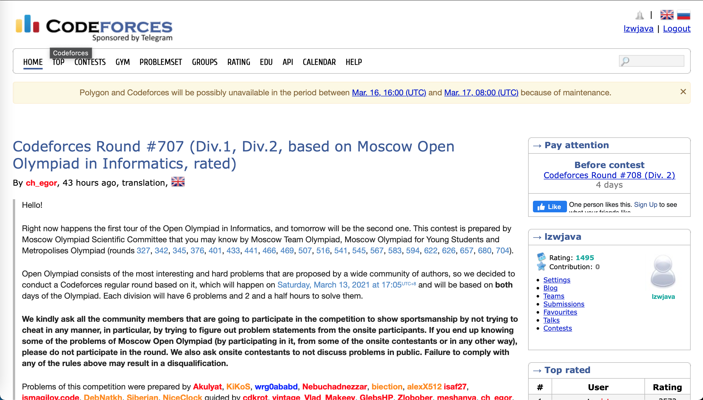
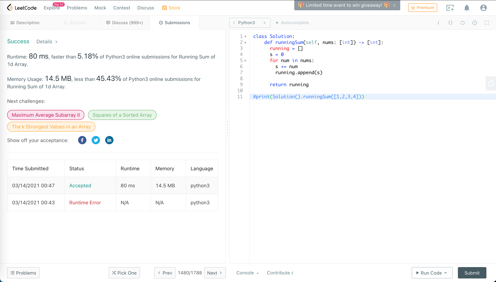

Programmation Python : Résolution de problèmes en ligne | Original, traduit par l'IA
Ici, nous utilisons un système d’évaluation en ligne pour résoudre des problèmes. Si vous êtes à l’aise avec l’anglais, vous pouvez utiliser Codeforces et LeetCode. Pour le chinois, vous pouvez essayer 计蒜客 (Jisuanke) et 力扣 (LeetCode). Ici, nous utilisons LeetCode. J’ai résolu 10 problèmes. De plus, pour le dernier problème, j’ai utilisé plusieurs méthodes pour optimiser l’efficacité du programme, passant de 10% à 99% de performances par rapport aux autres soumissions.


1480. Somme cumulée d’un tableau unidimensionnel
Étant donné un tableau
nums. Nous définissons une somme cumulée d’un tableau commerunningSum[i] = somme(nums[0]…nums[i]).Retournez la somme cumulée de
nums.
class Solution:
def runningSum(self, nums: [int]) -> [int]:
running = []
s = 0
for num in nums:
s += num
running.append(s)
return running
#print(Solution().runningSum([1,2,3,4]))
Traduction en français :
#print(Solution().runningSum([1,2,3,4]))
Remarque : Le code reste en anglais car il s’agit d’une instruction de programmation. Les commentaires et les noms de fonctions ne sont généralement pas traduits.

La première question est validée.
1108. Masquage d’une adresse IP
Étant donné une adresse IP (Internet Protocol) valide (IPv4), renvoyez une version masquée de cette adresse IP.
Une adresse IP masquée remplace chaque point "." par "[.]".
Exemple 1 :
Entrée : address = "1.1.1.1"
Sortie : "1[.]1[.]1[.]1"
Exemple 2 :
Entrée : address = "255.100.50.0"
Sortie : "255[.]100[.]50[.]0"
Contraintes :
- L’adresse IP donnée est une adresse IPv4 valide.
Solution
Pour résoudre ce problème, nous devons remplacer chaque point "." dans l’adresse IP par "[.]". Cela peut être facilement réalisé en utilisant la méthode replace disponible dans la plupart des langages de programmation.
Voici une solution en Python :
def defangIPaddr(address: str) -> str:
return address.replace('.', '[.]')
Explication :
- La fonction
defangIPaddrprend une chaîne de caractèresaddressen entrée. - La méthode
replaceest utilisée pour remplacer chaque occurrence de"."par"[.]". - La fonction retourne la nouvelle chaîne masquée.
Exemple d’utilisation :
print(defangIPaddr("1.1.1.1")) # Sortie : "1[.]1[.]1[.]1"
print(defangIPaddr("255.100.50.0")) # Sortie : "255[.]100[.]50[.]0"
Cette solution est simple et efficace, avec une complexité temporelle de O(n), où n est la longueur de la chaîne address.
Étant donné une adresse IP (IPv4) valide
address, retournez une version “défaussée” de cette adresse IP.Une adresse IP défaussée remplace chaque point
"."par"[.]".
class Solution:
def defangIPaddr(self, address: str) -> str:
return address.replace('.', '[.]')
print(Solution().defangIPaddr(‘1.1.1.1’))
## 1431. Les enfants avec le plus grand nombre de bonbons
### Description du problème
Il y a `n` enfants avec des bonbons. On vous donne un tableau d'entiers `candies`, où chaque élément `candies[i]` représente le nombre de bonbons que possède le `i`-ème enfant. On vous donne également un entier `extraCandies`, qui représente le nombre de bonbons supplémentaires que vous avez.
Vous devez déterminer, pour chaque enfant, s'il est possible qu'il ait le plus grand nombre de bonbons parmi tous les enfants après avoir reçu les `extraCandies`. Retournez un tableau de booléens `result` de longueur `n`, où `result[i]` est `true` si l'enfant `i` peut avoir le plus grand nombre de bonbons après avoir reçu les `extraCandies`, et `false` sinon.
**Exemple 1:**
```python
Input: candies = [2,3,5,1,3], extraCandies = 3
Output: [true,true,true,false,true]
Explication :
- Enfant 1 : 2 + 3 = 5 bonbons, ce qui est le plus grand nombre de bonbons.
- Enfant 2 : 3 + 3 = 6 bonbons, ce qui est le plus grand nombre de bonbons.
- Enfant 3 : 5 + 3 = 8 bonbons, ce qui est le plus grand nombre de bonbons.
- Enfant 4 : 1 + 3 = 4 bonbons, ce qui n’est pas le plus grand nombre de bonbons.
- Enfant 5 : 3 + 3 = 6 bonbons, ce qui est le plus grand nombre de bonbons.
Exemple 2:
Input: candies = [4,2,1,1,2], extraCandies = 1
Output: [true,false,false,false,false]
Explication :
- Seul l’enfant 1 peut avoir le plus grand nombre de bonbons après avoir reçu les
extraCandies.
Solution
Pour résoudre ce problème, nous devons d’abord déterminer le nombre maximum de bonbons parmi tous les enfants. Ensuite, pour chaque enfant, nous vérifions si le nombre de bonbons qu’il possède, augmenté des extraCandies, est supérieur ou égal à ce maximum. Si c’est le cas, nous retournons true pour cet enfant, sinon nous retournons false.
Voici une implémentation en Python :
def kidsWithCandies(candies, extraCandies):
max_candies = max(candies)
result = []
for candy in candies:
if candy + extraCandies >= max_candies:
result.append(True)
else:
result.append(False)
return result
Explication du code :
- Nous trouvons d’abord le nombre maximum de bonbons dans le tableau
candiesen utilisant la fonctionmax(). - Nous initialisons une liste vide
resultpour stocker les résultats. - Nous parcourons chaque élément du tableau
candieset vérifions si l’ajout desextraCandiespermet à cet enfant d’avoir au moins autant de bonbons que le maximum trouvé. - Nous ajoutons
TrueouFalseà la listeresulten fonction de cette vérification. - Enfin, nous retournons la liste
result.
Complexité
- Complexité temporelle : O(n), où
nest le nombre d’enfants. Nous parcourons le tableaucandiesdeux fois : une fois pour trouver le maximum et une fois pour vérifier chaque enfant. - Complexité spatiale : O(n), car nous stockons le résultat dans une liste de taille
n.
Conclusion
Ce problème est un bon exercice pour comprendre comment manipuler des tableaux et effectuer des comparaisons simples. La solution est efficace et facile à implémenter, ce qui en fait un bon exemple pour les débutants en programmation.
Étant donné le tableau
candieset l’entierextraCandies, oùcandies[i]représente le nombre de bonbons que l’enfant *ith* possède.Pour chaque enfant, vérifiez s’il existe un moyen de distribuer
extraCandiesparmi les enfants de sorte qu’il ou elle puisse avoir le plus grand nombre de bonbons parmi eux. Notez que plusieurs enfants peuvent avoir le plus grand nombre de bonbons.
class Solution:
def kidsWithCandies(self, candies: [int], extraCandies: int) -> [bool]:
max = 0
for candy in candies:
if candy > max:
max = candy
greatests = []
for candy in candies:
if candy + extraCandies >= max:
greatests.append(True)
else:
greatests.append(False)
return greatests
print(Solution().kidsWithCandies([2,3,5,1,3], 3))
## 1672. La Richesse du Client le Plus Aisé
> On vous donne une grille d'entiers `m x n` appelée `accounts` où `accounts[i][j]` représente la somme d'argent que le `i-ème` client possède dans la `j-ème` banque. Retournez *la **richesse** du client le plus riche.*
>
> La **richesse** d'un client est la somme d'argent qu'il possède sur tous ses comptes bancaires. Le client le plus riche est celui qui a la **richesse** maximale.
```python
class Solution:
def maximumWealth(self, accounts: [[int]]) -> int:
max = 0
for account in accounts:
s = sum(account)
if max < s:
max = s
return max
Le code reste en anglais, car il s’agit d’un exemple de code Python. La traduction des noms de variables ou de fonctions n’est généralement pas recommandée pour maintenir la cohérence et la lisibilité du code.
#print(Solution().maximumWealth([[1,2,3],[3,2,1]]))
Traduction en français :
#print(Solution().maximumWealth([[1,2,3],[3,2,1]]))
Note : Le code reste en anglais car il s’agit d’une instruction de programmation. Les commentaires et les noms de fonctions ne sont généralement pas traduits.
1470. Mélanger le tableau
Étant donné le tableau
numscomposé de2néléments sous la forme[x1,x2,...,xn,y1,y2,...,yn].Retournez le tableau sous la forme
[x1,y1,x2,y2,...,xn,yn].
class Solution:
def shuffle(self, nums: [int], n: int) -> [int]:
ns1 = nums[:n]
ns2 = nums[n:]
ns = []
for i in range(n):
ns.append(ns1[i])
ns.append(ns2[i])
return ns
print(Solution().shuffle([2,5,1,3,4,7], 3))
## 1512. Nombre de bonnes paires
### Description du problème
Étant donné un tableau d'entiers `nums`, une paire `(i, j)` est dite **bonne** si `nums[i] == nums[j]` et `i < j`. Retournez le nombre de paires bonnes.
**Exemple 1 :**
```plaintext
Entrée : nums = [1,2,3,1,1,3]
Sortie : 4
Explication : Il y a 4 paires bonnes : (0,3), (0,4), (3,4), (2,5).
Exemple 2 :
Entrée : nums = [1,1,1,1]
Sortie : 6
Explication : Chaque paire dans le tableau est bonne.
Exemple 3 :
Entrée : nums = [1,2,3]
Sortie : 0
Explication : Aucune paire n'est bonne.
Contraintes :
1 <= nums.length <= 1001 <= nums[i] <= 100
Approche
Pour résoudre ce problème, nous pouvons utiliser un dictionnaire pour compter la fréquence de chaque nombre dans le tableau. Ensuite, pour chaque nombre qui apparaît n fois, le nombre de paires bonnes qu’il peut former est donné par la formule combinatoire C(n, 2) = n * (n - 1) / 2. En additionnant ces valeurs pour tous les nombres, nous obtenons le nombre total de paires bonnes.
Solution
Voici une implémentation en Python de cette approche :
def numIdenticalPairs(nums):
from collections import defaultdict
count = defaultdict(int)
for num in nums:
count[num] += 1
total = 0
for key in count:
n = count[key]
if n >= 2:
total += n * (n - 1) // 2
return total
Explication
- Comptage des occurrences : Nous utilisons un dictionnaire pour compter combien de fois chaque nombre apparaît dans le tableau.
- Calcul des paires : Pour chaque nombre qui apparaît au moins deux fois, nous calculons le nombre de paires qu’il peut former en utilisant la formule
n * (n - 1) // 2. - Somme des paires : Nous additionnons les paires formées par chaque nombre pour obtenir le nombre total de paires bonnes.
Cette solution a une complexité temporelle de O(n), où n est la longueur du tableau nums, car nous parcourons le tableau une fois pour compter les occurrences et une autre fois pour calculer les paires. La complexité spatiale est également O(n) en raison de l’utilisation du dictionnaire pour stocker les comptes.
Étant donné un tableau d’entiers
nums.Une paire
(i,j)est dite bonne sinums[i]==nums[j]eti<j.Retournez le nombre de paires bonnes.
class Solution:
def numIdenticalPairs(self, nums: [int]) -> int:
j = 1
n = len(nums)
p = 0
while j < n:
for i in range(j):
if nums[i] == nums[j]:
p += 1
j+=1
return p
print(Solution().numIdenticalPairs([1,2,3,1,1,3]))
## 771. Pierres et Bijoux
**Description** : Vous recevez les chaînes de caractères `jewels` représentant les types de pierres qui sont des bijoux, et `stones` représentant les pierres que vous possédez. Chaque caractère dans `stones` est un type de pierre que vous possédez. Vous voulez savoir combien de pierres que vous possédez sont aussi des bijoux.
Les lettres sont sensibles à la casse, donc `"a"` est considéré comme un type de pierre différent de `"A"`.
**Exemple 1** :
Entrée : jewels = “aA”, stones = “aAAbbbb” Sortie : 3
**Exemple 2** :
Entrée : jewels = “z”, stones = “ZZ” Sortie : 0
**Contraintes** :
- `1 <= jewels.length, stones.length <= 50`
- `jewels` et `stones` sont composés uniquement de lettres anglaises.
- Tous les caractères de `jewels` sont uniques.
**Approche** : Pour résoudre ce problème, nous pouvons utiliser un ensemble (Set) pour stocker les caractères de `jewels`, puis parcourir chaque caractère de `stones` et vérifier s'il est présent dans l'ensemble. Si c'est le cas, nous incrémentons un compteur.
**Solution Code** :
```python
def numJewelsInStones(jewels: str, stones: str) -> int:
jewel_set = set(jewels)
count = 0
for stone in stones:
if stone in jewel_set:
count += 1
return count
Explication :
- Nous créons un ensemble
jewel_setcontenant tous les caractères dejewels. - Nous initialisons un compteur
countà 0. - Nous parcourons chaque caractère de
stoneset vérifions s’il est présent dansjewel_set. - Si c’est le cas, nous incrémentons
count. - Enfin, nous retournons la valeur de
count.
Cette approche a une complexité temporelle de O(n + m), où n est la longueur de jewels et m est la longueur de stones. La complexité spatiale est O(n) due à l’utilisation de l’ensemble pour stocker les caractères de jewels.
On vous donne deux chaînes de caractères :
jewelsreprésentant les types de pierres qui sont des joyaux, etstonesreprésentant les pierres que vous possédez. Chaque caractère dansstonesest un type de pierre que vous avez. Vous voulez savoir combien de pierres que vous possédez sont également des joyaux.Les lettres sont sensibles à la casse, donc
"a"est considéré comme un type de pierre différent de"A".
class Solution:
def numJewelsInStones(self, jewels: str, stones: str) -> int:
n = 0
for i in range(len(jewels)):
js = jewels[i:i+1]
n += stones.count(js)
return n
Le code reste en anglais, car il s’agit d’un extrait de code Python. La traduction n’est pas nécessaire pour les noms de variables, de fonctions ou de classes.
print(Solution().numJewelsInStones(“aA”, “aAAbbbb”))
## 1603. Conception d'un système de stationnement
> Conception d'un système de stationnement pour un parking. Le parking dispose de trois types de places de stationnement : grandes, moyennes et petites, avec un nombre fixe d'emplacements pour chaque taille.
>
> Implémentez la classe `ParkingSystem` :
>
> - `ParkingSystem(int big, int medium, int small)` Initialise un objet de la classe `ParkingSystem`. Le nombre d'emplacements pour chaque type de place de stationnement est donné en tant que partie du constructeur.
> - `bool addCar(int carType)` Vérifie s'il y a une place de stationnement de type `carType` pour la voiture qui souhaite entrer dans le parking. `carType` peut être de trois types : grande, moyenne ou petite, qui sont représentés respectivement par `1`, `2` et `3`. **Une voiture ne peut se garer que dans une place de stationnement de son** `carType`. S'il n'y a pas de place disponible, retourne `false`, sinon gare la voiture dans cette place de taille correspondante et retourne `true`.
```python
class ParkingSystem:
slots = [0, 0, 0]
def __init__(self, big: int, medium: int, small: int):
self.slots[0] = big
self.slots[1] = medium
self.slots[2] = small
def addCar(self, carType: int) -> bool:
if self.slots[carType - 1] > 0:
self.slots[carType - 1] -=1
return True
else:
return False
# parkingSystem = ParkingSystem(1, 1, 0)
# print(parkingSystem.addCar(1))
# print(parkingSystem.addCar(2))
# print(parkingSystem.addCar(3))
# print(parkingSystem.addCar(1))
1773. Compter les éléments correspondant à une règle
On vous donne un tableau
items, où chaqueitems[i] = [typei, colori, namei]décrit le type, la couleur et le nom dui-èmeélément. On vous donne également une règle représentée par deux chaînes de caractères,ruleKeyetruleValue.Le
i-èmeélément est considéré comme correspondant à la règle si l’une des conditions suivantes est vraie :
ruleKey == "type"etruleValue == typei.ruleKey == "color"etruleValue == colori.ruleKey == "name"etruleValue == namei.Retournez le nombre d’éléments qui correspondent à la règle donnée.
class Solution:
def countMatches(self, items: [[str]], ruleKey: str, ruleValue: str) -> int:
i = 0
if ruleKey == "type":
i = 0
elif ruleKey == "color":
i = 1
else:
i = 2
n = 0
for item in items:
if item[i] == ruleValue:
n +=1
return n
Le code reste en anglais, car il s’agit d’un code source qui utilise des noms de variables et des clés spécifiques. La traduction de ces éléments pourrait entraîner des erreurs ou des incompréhensions dans le contexte de la programmation.
print(Solution().countMatches([[“phone”,”blue”,”pixel”],[“computer”,”silver”,”lenovo”],[“phone”,”gold”,”iphone”]], “color”, “silver”))
## 1365. Combien de nombres sont plus petits que le nombre actuel
> Étant donné le tableau `nums`, pour chaque `nums[i]`, déterminez combien de nombres dans le tableau sont plus petits que lui. Autrement dit, pour chaque `nums[i]`, vous devez compter le nombre de `j` valides tels que `j != i` **et** `nums[j] < nums[i]`.
>
> Retournez la réponse dans un tableau.
> ```
> Entrée : nums = [8,1,2,2,3]
> Sortie : [4,0,1,1,3]
> Explication :
> Pour nums[0]=8, il existe quatre nombres plus petits que lui (1, 2, 2 et 3).
> Pour nums[1]=1, il n'existe aucun nombre plus petit que lui.
> Pour nums[2]=2, il existe un nombre plus petit que lui (1).
> Pour nums[3]=2, il existe un nombre plus petit que lui (1).
> Pour nums[4]=3, il existe trois nombres plus petits que lui (1, 2 et 2).
> ```
```python
class Solution:
def smallerNumbersThanCurrent(self, nums: [int]) -> [int]:
ns = []
l = len(nums)
for i in range(l):
n = 0
for j in range(l):
if i != j:
if nums[j] < nums[i]:
n += 1
ns.append(n)
return ns
print(Solution().smallerNumbersThanCurrent([8,1,2,2,3]))
Temps d'exécution : 528 ms, surpassant 11,81 % des programmes. Optimisons cela.
```python
class Solution:
def smallerNumbersThanCurrent(self, nums: [int]) -> [int]:
l = len(nums)
sort_nums = nums.copy()
ins = list(range(l))
for i in range(l):
for j in range(i+1, l):
if sort_nums[i] > sort_nums[j]:
a = sort_nums[i]
sort_nums[i] = sort_nums[j]
sort_nums[j] = a
a = ins[i]
ins[i] = ins[j]
ins[j] = a
smalls = [0]
for i in range(1, l):
if sort_nums[i-1] == sort_nums[i]:
smalls.append(smalls[i-1])
else:
smalls.append(i)
Traduction en français :
ins = list(range(l))
for i in range(l):
for j in range(i+1, l):
if sort_nums[i] > sort_nums[j]:
a = sort_nums[i]
sort_nums[i] = sort_nums[j]
sort_nums[j] = a
a = ins[i]
ins[i] = ins[j]
ins[j] = a
smalls = [0]
for i in range(1, l):
if sort_nums[i-1] == sort_nums[i]:
smalls.append(smalls[i-1])
else:
smalls.append(i)
Le code reste en anglais car il s’agit d’un code source, mais voici une explication en français :
insest une liste initialisée avec des indices allant de0àl-1.- Une double boucle
forest utilisée pour trier les éléments desort_numspar ordre croissant. À chaque fois que deux éléments sont échangés, les indices correspondants dansinssont également échangés. -
Ensuite, une liste
smallsest créée pour stocker le nombre d’éléments plus petits que l’élément actuel. Si l’élément actuel est égal au précédent, il reçoit la même valeur que le précédent danssmalls. Sinon, il reçoit l’indice actuel.# print(sort_nums) # print(smalls)
r_is = list(range(l))
for i in ins:
r_is[ins[i]] = i
ns = []
for i in range(l):
ns.append(smalls[r_is[i]])
return ns
print(Solution().smallerNumbersThanCurrent([8,1,2,2,3]))
Ce test a pris `284ms`, ce qui est moins que les `528ms` précédents.
Voici une version simplifiée en utilisant les fonctions du système :
```python
import os
# Créer un répertoire
os.mkdir('nouveau_dossier')
# Lister les fichiers dans un répertoire
fichiers = os.listdir('.')
# Supprimer un fichier
os.remove('fichier_a_supprimer.txt')
# Vérifier si un fichier existe
if os.path.exists('fichier.txt'):
print("Le fichier existe.")
Cette version utilise des fonctions de base du module os pour effectuer des opérations courantes sur le système de fichiers.
class Solution:
def smallerNumbersThanCurrent(self, nums: [int]) -> [int]:
sort_nums = nums.copy()
sort_nums.sort()
ns = []
for num in nums:
ns.append(sort_nums.index(num))
return ns
print(Solution().smallerNumbersThanCurrent([8,1,2,2,3]))
Cela prend seulement `64ms`, ce qui bat `71%` des soumissions.
```python
class Solution:
def smallerNumbersThanCurrent(self, nums: [int]) -> [int]:
l = len(nums)
ns = [0] * l
for i in range(l):
for j in range(i+1, l):
if nums[i] > nums[j]:
ns[i] +=1
elif nums[i] < nums[j]:
ns[j] +=1
else:
pass
return ns
Traduction en français :
class Solution:
def smallerNumbersThanCurrent(self, nums: [int]) -> [int]:
l = len(nums)
ns = [0] * l
for i in range(l):
for j in range(i+1, l):
if nums[i] > nums[j]:
ns[i] +=1
elif nums[i] < nums[j]:
ns[j] +=1
else:
pass
return ns
Explication :
Cette classe Solution contient une méthode smallerNumbersThanCurrent qui prend en entrée une liste d’entiers nums et retourne une nouvelle liste ns où chaque élément ns[i] représente le nombre d’éléments dans nums qui sont plus petits que nums[i].
lest la longueur de la listenums.nsest une liste de zéros de même longueur quenums.- La double boucle
forcompare chaque élémentnums[i]avec tous les éléments suivantsnums[j].- Si
nums[i]est plus grand quenums[j], on incrémentens[i]. - Si
nums[i]est plus petit quenums[j], on incrémentens[j]. - Si les éléments sont égaux, on ne fait rien (
pass).
- Si
Enfin, la méthode retourne la liste ns qui contient le nombre d’éléments plus petits que chaque élément de nums.
print(Solution().smallerNumbersThanCurrent([8,1,2,2,3]))
J'ai trouvé une autre solution. Le temps d'exécution est de `400ms`.
```python
class Solution:
def smallerNumbersThanCurrent(self, nums: [int]) -> [int]:
ss = sorted((e,i) for i,e in enumerate(nums))
l = len(nums)
smalls = [0]
for i in range(1, l):
(e0, j0) = ss[i-1]
(e1, j1) = ss[i]
if e0 == e1:
smalls.append(smalls[i-1])
else:
smalls.append(i)
ns = [0]*l
for i in range(l):
(e, j) = ss[i]
ns[j] = smalls[i]
return ns
print(Solution().smallerNumbersThanCurrent([8,1,2,2,3]))
> Temps d'exécution : 52 ms, plus rapide que 91,45 % des soumissions Python3 en ligne pour le problème "Combien de nombres sont plus petits que le nombre actuel".
>
> Utilisation de la mémoire : 14,6 Mo, moins que 15,18 % des soumissions Python3 en ligne pour le problème "Combien de nombres sont plus petits que le nombre actuel".
Enfin, ça a marché ! Cette méthode est encore plus rapide et a surpassé `91,45 %` des soumissions.
Continuez à simplifier.
```python
class Solution:
def smallerNumbersThanCurrent(self, nums: [int]) -> [int]:
ss = sorted((e,i) for i,e in enumerate(nums))
l = len(nums)
smalls = [0]
ns = [0] * l
for i in range(1, l):
(e0, j0) = ss[i - 1]
(e1, j1) = ss[i]
if e0 == e1:
smalls.append(smalls[i - 1])
else:
smalls.append(i)
ns[j1] = smalls[i]
return ns
print(Solution().smallerNumbersThanCurrent([8,1,2,2,3]))
Continuer.
```python
class Solution:
def smallerNumbersThanCurrent(self, nums: [int]) -> [int]:
ss = sorted((e,i) for i,e in enumerate(nums))
l = len(nums)
last = 0
ns = [0]*l
for i in range(1, l):
(e0, j0) = ss[i-1]
(e1, j1) = ss[i]
if e0 == e1:
pass
else:
last = i
ns[j1] = last
return ns
print(Solution().smallerNumbersThanCurrent([8,1,2,2,3]))
À ce stade, nous avons atteint un temps d'exécution de `40ms`, surpassant ainsi `99,81%` des programmes.
> Temps d'exécution : 40 ms, plus rapide que 99,81 % des soumissions Python3 en ligne pour le problème "Combien de nombres sont plus petits que le nombre actuel".
>
> Utilisation de la mémoire : 14,4 Mo, moins que 15,18 % des soumissions Python3 en ligne pour le problème "Combien de nombres sont plus petits que le nombre actuel".
Voici une autre solution.
```python
class Solution:
def smallerNumbersThanCurrent(self, nums: [int]) -> [int]:
l = len(nums)
n = [0] * 101
max_num = 0
for num in nums:
n[num] += 1
if num > max_num:
max_num = num
sm = [0] * (max_num + 1)
somme = 0
for i in range(max_num + 1):
sm[i] = somme
somme += n[i]
ns = [0] * l
for i in range(l):
ns[i] = sm[nums[i]]
return ns
print(Solution().smallerNumbersThanCurrent([8,1,2,2,3]))
Voici un exemple un peu plus complexe.
```python
class Solution:
def smallerNumbersThanCurrent(self, nums: [int]) -> [int]:
l = len(nums)
n = [0] * 101
max_num = 0
for num in nums:
n[num] += 1
if num > max_num:
max_num = num
short_n = []
short_num = [] * l
zn = [0] * 101
j = 0
for i in range(max_num+1):
if n[i] > 0:
zn[i] = j
short_n.append(n[i])
short_num.append(num)
j += 1
sm = [0] * j
somme = 0
for i in range(j):
sm[i] = somme
somme += short_n[i]
ns = [0] * l
for i in range(l):
ns[i] = sm[zn[nums[i]]]
return ns
print(Solution().smallerNumbersThanCurrent([8,1,2,2,3]))
```python
class Solution:
def smallerNumbersThanCurrent(self, nums: [int]) -> [int]:
max_num = max(nums)
n = [0] * (max_num + 1)
for num in nums:
n[num] += 1
sorted_ls = []
for i in range(max_num + 1):
if n[i] > 0:
sorted_ls.append(i)
sm = [0] * (max_num + 1)
sum = 0
for i in range(len(sorted_ls)):
v = sorted_ls[i]
sm[v] = sum
sum += n[v]
ns = []
for i in range(len(nums)):
ns.append(sm[nums[i]])
return ns
# print(Solution().smallerNumbersThanCurrent([72,48,32,16,10,59,83,38,1,4,68,7,67,16,5,35,99,15,55,11,24,3,63,81,16,95,35,87,24,84,57,49,42,80,34,33,82,81,31,31,7,75,100,75,22,44,54,77,89,71,81,66,7]))
Exercice
- Les étudiants résolvent des problèmes de manière similaire à ce qui est montré ci-dessus.